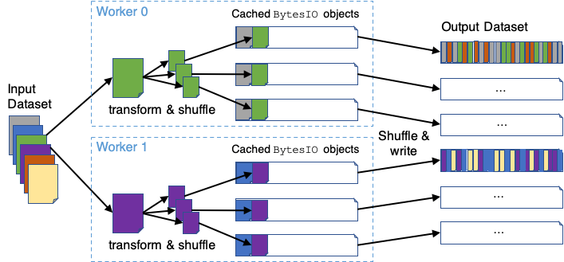

[1]:
# Copyright 2021 NVIDIA Corporation. All Rights Reserved.
#
# Licensed under the Apache License, Version 2.0 (the "License");
# you may not use this file except in compliance with the License.
# You may obtain a copy of the License at
#
# http://www.apache.org/licenses/LICENSE-2.0
#
# Unless required by applicable law or agreed to in writing, software
# distributed under the License is distributed on an "AS IS" BASIS,
# WITHOUT WARRANTIES OR CONDITIONS OF ANY KIND, either express or implied.
# See the License for the specific language governing permissions and
# limitations under the License.
# ==============================================================================
Multi-GPU Scaling in NVTabular with Dask
NVTabular + Dask Integration
NVTabular enables the use of Dask for multi-GPU parallelism, which integrates the following classes with the RAPIDS Dask-CuDF library:
nvtabular.Dataset: Most NVTabular functionality requires the raw data to be converted to a Dataset object. The conversion is very inexpensive, as it requires minimal IO (if any at all). A Dataset can be initialized using file/directory paths (“csv” or “parquet”), a PyArrow Table, a Pandas/CuDF DataFrame, or a Pandas/CuDF-based Dask DataFrame. The purpose of this “wrapper” class is to provide other NVTabular components with reliable mechanisms to (1) translate the target data into a Dask collection, and to (2) iterate over the target data in small-enough chunks to fit comfortably in GPU memory.
nvtabular.Workflow: This is the central class used in NVTabular to compose a GPU-accelerated preprocessing pipeline. The Workflow class now tracks the state of the underlying data by applying all operations to an internal Dask-CuDF DataFrame object (
ddf).nvtabular.ops.StatOperator: All “statistics-gathering” operations must be designed to operate directly on the Workflow object’s internal
ddf. This requirement facilitates the ability of NVTabular to handle the calculation of global statistics in a scalable way.
Big Picture: NVTabular is tightly integrated with Dask-CuDF. By representing the underlying dataset as a (lazily-evaluated) collection of CuDF DataFrame objects (i.e. a single dask_cudf.DataFrame), we can seamlessly scale our preprocessing workflow to multiple GPUs.
Simple Multi-GPU Toy Example
In order to illustrate the Dask-CuDF-based functionality of NVTabular, we will walk through a simple preprocessing example using toy data.
Resolving Memory Errors
This notebook was developed on a DGX-1 system (8 V100 GPUs with 1TB host memory). Users with limited device and/or host memory (less than 16GB on device, and less than 32GB on host) may need to modify one or more of the default options. Here are the best places to start:
device_memory_limit: Reduce the memory limit for workers in your cluster. This setting may need to be much lower than the actual memory capacity of your device.part_mem_fraction: Reduce the partition size of your Dataset. Smaller partition sizes enable better control over memory spilling on the workers (but reduces compute efficiency).out_files_per_proc: Increase the number of output files per worker. The worker must be able to shuffle each output file in device memory for the per-worker shuffling algorithm.shuffle: Change the shuffling option toShuffle.PER_PARTITIONinworkflow.apply. The default (per-worker) option currently requires the entire output dataset to fit in host memory.
Step 1: Import Libraries and Cleanup Working Directories
[2]:
# Standard Libraries
import os
import shutil
# External Dependencies
import cupy as cp
import cudf
import dask_cudf
from dask_cuda import LocalCUDACluster
from dask.distributed import Client
from dask.delayed import delayed
import rmm
# NVTabular
import nvtabular as nvt
import nvtabular.ops as ops
from nvtabular.io import Shuffle
from nvtabular.utils import device_mem_size
Note that it is often a good idea to set-aside (fast) dedicated disk space for Dask “workers” to spill data and write logging information. To make things simple, we will perform all IO within a single BASE_DIR for this example. Make sure to reset this environment variable as desired.
[3]:
# Choose a "fast" root directory for this example
BASE_DIR = os.environ.get("BASE_DIR", "./basedir")
# Define and clean our worker/output directories
dask_workdir = os.path.join(BASE_DIR, "workdir")
demo_output_path = os.path.join(BASE_DIR, "demo_output")
demo_dataset_path = os.path.join(BASE_DIR, "demo_dataset")
# Ensure BASE_DIR exists
if not os.path.isdir(BASE_DIR):
os.mkdir(BASE_DIR)
# Make sure we have a clean worker space for Dask
if os.path.isdir(dask_workdir):
shutil.rmtree(dask_workdir)
os.mkdir(dask_workdir)
# Make sure we have a clean output path
if os.path.isdir(demo_output_path):
shutil.rmtree(demo_output_path)
os.mkdir(demo_output_path)
# Get device memory capacity
capacity = device_mem_size(kind="total")
Step 2: Deploy a Distributed-Dask Cluster
Before we walk through the rest of this multi-GPU preprocessing example, it is important to reiterate that Dask-CuDF is used extensively within NVTabular. This essentially means that you do not need to do anything special to use Dask here. With that said, the default behavior of NVTabular is to to utilize Dask’s “synchronous” task scheduler, which precludes distributed processing. In order to properly utilize a multi-GPU system, you
need to deploy a dask.distributed cluster.
There are many different ways to create a distributed Dask cluster. This notebook will focus only on the LocalCUDACluster API, which is provided by the RAPIDS Dask-CUDA library. It is also recommended that you check out this blog article to see a high-level summary of the many other cluster-deployment utilities.
For this example, we will assume that you want to perform preprocessing on a single machine with multiple GPUs. In this case, we can use dask_cuda.LocalCUDACluster to deploy a distributed cluster with each worker process being pinned to a distinct GPU. This class also provides our workers with mechanisms for device-to-host memory spilling (explained below), and (optionally) enables the use of NVLink and infiniband-based inter-process communication via UCX.
[4]:
# Deploy a Single-Machine Multi-GPU Cluster
protocol = "tcp" # "tcp" or "ucx"
visible_devices = "0,1,2,3" # Delect devices to place workers
device_spill_frac = 0.9 # Spill GPU-Worker memory to host at this limit.
# Reduce if spilling fails to prevent
# device memory errors.
cluster = None # (Optional) Specify existing scheduler port
if cluster is None:
cluster = LocalCUDACluster(
protocol=protocol,
CUDA_VISIBLE_DEVICES=visible_devices,
local_directory=dask_workdir,
device_memory_limit=capacity * device_spill_frac,
)
# Create the distributed client
client = Client(cluster)
client
[4]:
Client
|
Cluster
|
The Dask Diagnostics Dashboard
If you created a new distributed cluster in the previous cell, the output should specify the address of a diagnostics dashboard (e.g. Dashboard: http://IP:8787/status). You can also run client.dashboard_link to get the same information. If you have Bokeh installed in your environment, the scheduler will create this dashboard by default. If you click on the link, or paste the url in a web browser,
you will see a page that looks something like the figure below. Note that you may need to update the IP address in the link if you are working on a remote machine.

The Dask dashboard is typically the best way to visualize the execution progress and resource usage of a Multi-GPU NVTabular workflow. For JupyterLab users, the Dask JupyterLab Extension further integrates the same diagnostic figures into the notebook environment itself.
Device-to-Host Memory Spilling
One of the advantages of using Dask-CUDA to deploy a distributed cluster is that the workers will move data between device memory and host memory, and between host memory and disk, to avoid out-of-memory (OOM) errors. To set the threshold for device-to-host spilling, a specific byte size can be specified with device_memory_limit. Since the worker can only consider the size of input data, and previously finished task output, this limit must be set
lower than the actual GPU memory capacity. If the limit is set too high, temporary memory allocations within the execution of task may lead to OOM. With that said, since spilling can dramatically reduce the overall performance of a workflow, a conservative device_memory_limit setting is only advised when it proves absolutely necessary (i.e. heavy spilling is deemed inevitable for a given workflow).
Initializing Memory Pools
Since allocating memory is often a performance bottleneck, it is usually a good idea to initialize a memory pool on each of our workers. When using a distributed cluster, we must use the client.run utility to make sure a function is exectuted on all available workers.
[5]:
# Initialize RMM pool on ALL workers
def _rmm_pool():
rmm.reinitialize(
pool_allocator=True,
initial_pool_size=None, # Use default size
)
client.run(_rmm_pool)
[5]:
{'tcp://127.0.0.1:35199': None,
'tcp://127.0.0.1:36255': None,
'tcp://127.0.0.1:40587': None,
'tcp://127.0.0.1:43255': None}
Note: If you have problems with this, it may be a numba-0.51 problem. Try: conda install -c conda-forge numba=0.50
Step 3: Create a “Toy” Parquet Dataset
In order to illustrate the power of multi-GPU scaling, without requiring an excessive runtime, we can use the cudf.datasets.timeseries API to generate a largish (~20GB) toy dataset with Dask-CuDF.
[6]:
%%time
# Write a "largish" dataset (~20GB).
# Change `write_count` and/or `freq` for larger or smaller dataset.
# Avoid re-writing dataset if it already exists.
write_count = 25
freq = "1s"
if not os.path.exists(demo_dataset_path):
def _make_df(freq, i):
df = cudf.datasets.timeseries(
start="2000-01-01", end="2000-12-31", freq=freq, seed=i
).reset_index(drop=False)
df["name"] = df["name"].astype("object")
df["label"] = cp.random.choice(cp.array([0, 1], dtype="uint8"), len(df))
return df
dfs = [delayed(_make_df)(freq, i) for i in range(write_count)]
dask_cudf.from_delayed(dfs).to_parquet(demo_dataset_path, write_index=False)
del dfs
CPU times: user 7.39 s, sys: 2.75 s, total: 10.1 s
Wall time: 3min 31s
Step 4: Create an NVTabular Dataset object
As discussed above, the nvt.Workflow class requires data to be represented as an nvt.Dataset. This convention allows NVTabular to abstract away the raw format of the data, and convert everything to a consistent dask_cudf.DataFrame representation. Since the Dataset API effectively wraps functions like dask_cudf.read_csv, the syntax is very simple and the computational cost is minimal.
Important Dataset API Considerations:
Can be initialized with the following objects:
1+ file/directory paths. An
engineargument is required to specify the file format (unless file names are appended withcsvorparquet)cudf.DataFrame. Internalddfwill have 1 partition.pandas.DataFrame. Internalddfwill have 1 partition.pyarrow.Table. Internalddfwill have 1 partition.dask_cudf.DataFrame. Internalddfwill be a shallow copy of the input.dask.dataframe.DataFrame. Internalddfwill be a direct pandas->cudf conversion of the input.
For file-based data initialization, the size of the internall
ddfpartitions will be chosen according to the following arguments (in order of precedence):part_size: Desired maximum size of each partition in bytes. Note that you can pass a string here. like"2GB".part_mem_fraction: Desired maximum size of each partition as a fraction of total GPU memory.
Note on Dataset Partitioning: The part_size and part_mem_fraction options will be used to specify the desired maximum partition size after coversion to CuDF, not the partition size in parquet format (which may be compressed and/or dictionary encoded). For the “parquet” engine, these parameters do not result in the direct mapping of a file byte-range to a partition. Instead, the first row-group in the dataset is converted to a cudf.DataFrame, and the size of that DataFrame is
used to estimate the number of contiguous row-groups to assign to each partition. In the current “parquet” engine implementation, row-groups stored in different files will always be mapped to different partitions.
[7]:
%%time
# Create a Dataset
# (`engine` argument optional if file names appended with `csv` or `parquet`)
ds = nvt.Dataset(demo_dataset_path, engine="parquet", part_size="500MB")
CPU times: user 114 ms, sys: 33.5 ms, total: 147 ms
Wall time: 2.88 s
Once your data is converted to a Dataset object, it can be converted to a dask_cudf.DataFrame using the to_ddf method. The wonderful thing about this DataFrame object, is that you are free to operate on it using a familiar CuDF/Pandas API.
[8]:
ds.to_ddf().head()
[8]:
| timestamp | id | name | x | y | label | |
|---|---|---|---|---|---|---|
| 0 | 2000-01-01 00:00:00 | 1019 | Michael | 0.168205 | -0.547230 | 1 |
| 1 | 2000-01-01 00:00:01 | 984 | Patricia | -0.145077 | -0.240521 | 0 |
| 2 | 2000-01-01 00:00:02 | 935 | Victor | 0.557024 | -0.098855 | 0 |
| 3 | 2000-01-01 00:00:03 | 970 | Alice | 0.527366 | -0.632569 | 1 |
| 4 | 2000-01-01 00:00:04 | 997 | Dan | 0.309193 | 0.704845 | 0 |
Note that the output of a Dataset (a ddf) can be used to initialize a new Dataset. This means we can use Dask-CuDF to perform complex ETL on our data before we process it in a Workflow. For example, although NVTabular does not support global shuffling transformations (yet), these operations can be performed before (and/or after) a Workflow. The catch here is that operations requiring the global movement of data between partitions can require more device memory than available.
[9]:
# Example of global shuffling outside an NVT Workflow
ddf = ds.to_ddf().shuffle("id", ignore_index=True)
ds = nvt.Dataset(ddf)
ds.to_ddf()
[9]:
| timestamp | id | name | x | y | label | |
|---|---|---|---|---|---|---|
| npartitions=75 | ||||||
| datetime64[us] | int64 | object | float64 | float64 | uint8 | |
| ... | ... | ... | ... | ... | ... | |
| ... | ... | ... | ... | ... | ... | ... |
| ... | ... | ... | ... | ... | ... | |
| ... | ... | ... | ... | ... | ... |
Since global shuffling operations can lead to significant GPU-memory pressure, we will start with a simpler Dataset definition for this example.
[10]:
del ds
del ddf
dataset = nvt.Dataset(demo_dataset_path, engine="parquet", part_mem_fraction=0.1)
Note that the default value for part_mem_fraction (0.125) is usually safe, but we will use a slightly smaller partition size for this example to be conservative.
Note: If you have a system with limited device and/or host memory (less than 16GB on device, and less than 32GB on host), you may need to use an even smaller part_mem_fraction here.
Step 5: Define our NVTabular Workflow
Now that we have our Dask cluster up and running, we can use the NVTabular API as usual. For multi-GPU execution, the only requirement is that you specify a client when you initialize the NVTabular Workflow.
IMPORTANT: You must pass client to nvt.Workflow to enable Multi-GPU execution!
[11]:
cat_features = ["name", "id"] >> ops.Categorify(
out_path=demo_output_path, # Path to write unique values used for encoding
)
cont_features = ["x", "y"] >> ops.Normalize()
workflow = nvt.Workflow(cat_features + cont_features + ["label", "timestamp"], client=client)
Step 6: Apply our Workflow
[12]:
%%time
shuffle = Shuffle.PER_WORKER # Shuffle algorithm
out_files_per_proc = 8 # Number of output files per worker
workflow.fit_transform(dataset).to_parquet(
output_path=os.path.join(demo_output_path, "processed"),
shuffle=shuffle,
out_files_per_proc=out_files_per_proc,
)
CPU times: user 3.73 s, sys: 1.27 s, total: 5 s
Wall time: 2min 19s
For this (modestly sized) toy dataset, we get a great performance boost when we move from 1 to 2 V100 GPUs, and the workflow scales reasonably well to a full DGX-1 system. Although the 8-GPU performance reflects a parallel efficiency of only 50% or so, higher effiencies can be expected for larger datasets. In fact, recent TPCx-BB benchmarking studies have clearly demonstrated that NVTabular’s parallel backend, Dask-CuDF, can effectively scale to many V100 or A100-based nodes (utilizing more than 100 GPUs).
Note on Communication: It is important to recognize that multi-GPU and multi-node scaling is typically much more successful with UCX support (enabling both NVLink and Infiniband communication).
Example Results:
1 x 32GB V100 GPU
CPU times: user 5.74 s, sys: 3.87 s, total: 9.62 s
Wall time: 50.9 s
2 x 32GB V100 GPUs
CPU times: user 6.64 s, sys: 3.53 s, total: 10.2 s
Wall time: 24.3 s
8 x 32GB V100 GPUs
CPU times: user 6.84 s, sys: 3.73 s, total: 10.6 s
Wall time: 13.5 s
Now that we are done executing our Workflow, we can check the output data to confirm that everything is looking good.
[13]:
dask_cudf.read_parquet(os.path.join(demo_output_path, "processed")).head()
[13]:
| x | y | timestamp | name | id | label | |
|---|---|---|---|---|---|---|
| 0 | -1.402733 | -0.412443 | 2000-01-10 05:00:09 | 4 | 186 | 1 |
| 1 | -0.875414 | 0.320949 | 2000-01-04 13:51:37 | 20 | 180 | 0 |
| 2 | 1.176552 | 1.059950 | 2000-11-10 16:18:51 | 15 | 141 | 0 |
| 3 | -0.877984 | -0.868687 | 2000-01-07 01:50:27 | 14 | 153 | 1 |
| 4 | 1.045782 | 1.382661 | 2000-02-27 08:11:48 | 6 | 185 | 0 |
Step 7: (Optional) Follow-up Processing/Writing with dask_cudf
Instead of using to_parquet to persist your processed dataset to disk, it is also possible to get a dask dataframe from the transformed dataset and perform follow-up operations with the Dask-CuDF API. For example, if you want to convert the entire dataset into a groupby aggregation, you could do something like the following.
[14]:
%%time
ddf = workflow.transform(dataset).to_ddf()
ddf = ddf.groupby(["name"]).max() # Optional follow-up processing
ddf.to_parquet(os.path.join(demo_output_path, "dask_output"), write_index=False)
CPU times: user 191 ms, sys: 4.06 ms, total: 195 ms
Wall time: 2.26 s
As always, we can use either nvt.Dataset or dask_cudf directly to read back our data.
[15]:
dask_cudf.read_parquet(os.path.join(demo_output_path, "dask_output")).compute()
[15]:
| x | y | timestamp | id | label | |
|---|---|---|---|---|---|
| 0 | 1.732032 | 1.731953 | 2000-12-30 23:59:59 | 356 | 1 |
| 1 | 1.732032 | 1.731952 | 2000-12-31 00:00:00 | 362 | 1 |
| 2 | 1.732032 | 1.731953 | 2000-12-31 00:00:00 | 357 | 1 |
| 3 | 1.732032 | 1.731953 | 2000-12-31 00:00:00 | 349 | 1 |
| 4 | 1.732032 | 1.731953 | 2000-12-31 00:00:00 | 360 | 1 |
| 5 | 1.732032 | 1.731952 | 2000-12-30 23:59:59 | 359 | 1 |
| 6 | 1.732032 | 1.731952 | 2000-12-31 00:00:00 | 354 | 1 |
| 7 | 1.732032 | 1.731952 | 2000-12-30 23:59:58 | 364 | 1 |
| 8 | 1.732032 | 1.731953 | 2000-12-31 00:00:00 | 354 | 1 |
| 9 | 1.732032 | 1.731952 | 2000-12-31 00:00:00 | 359 | 1 |
| 10 | 1.732032 | 1.731952 | 2000-12-31 00:00:00 | 357 | 1 |
| 11 | 1.732032 | 1.731953 | 2000-12-31 00:00:00 | 349 | 1 |
| 12 | 1.732032 | 1.731952 | 2000-12-30 23:59:58 | 362 | 1 |
| 13 | 1.732032 | 1.731953 | 2000-12-31 00:00:00 | 361 | 1 |
| 14 | 1.732032 | 1.731952 | 2000-12-31 00:00:00 | 352 | 1 |
| 15 | 1.732032 | 1.731953 | 2000-12-30 23:59:58 | 353 | 1 |
| 16 | 1.732032 | 1.731953 | 2000-12-31 00:00:00 | 349 | 1 |
| 17 | 1.732032 | 1.731953 | 2000-12-31 00:00:00 | 353 | 1 |
| 18 | 1.732032 | 1.731953 | 2000-12-31 00:00:00 | 360 | 1 |
| 19 | 1.732032 | 1.731952 | 2000-12-30 23:59:58 | 351 | 1 |
| 20 | 1.732032 | 1.731952 | 2000-12-30 23:59:59 | 363 | 1 |
| 21 | 1.732032 | 1.731953 | 2000-12-30 23:59:57 | 357 | 1 |
| 22 | 1.732032 | 1.731952 | 2000-12-31 00:00:00 | 365 | 1 |
| 23 | 1.732032 | 1.731952 | 2000-12-31 00:00:00 | 350 | 1 |
| 24 | 1.732032 | 1.731952 | 2000-12-30 23:59:59 | 353 | 1 |
| 25 | 1.732032 | 1.731952 | 2000-12-30 23:59:59 | 359 | 1 |
Notes on Shuffling
NVTabular currently supports two shuffling options when writing output to disk:
nvt.io.Shuffle.PER_PARTITIONnvt.io.Shuffle.PER_WORKER
For both these cases, the partitions of the underlying dataset/ddf are randomly ordered before any processing is performed. If PER_PARTITION is specified, each worker/process will also shuffle the rows within each partition before splitting and appending the data to a number (out_files_per_proc) of output files. Output files are distinctly mapped to each worker process. If PER_WORKER is specified, each worker will follow the same procedure as PER_PARTITION, but will re-shuffle
each file after all data is persisted. This results in a full shuffle of the data processed by each worker. To improve performace, this option currently uses host-memory BytesIO objects for the intermediate persist stage. The general PER_WORKER algorithm is illustrated here:
